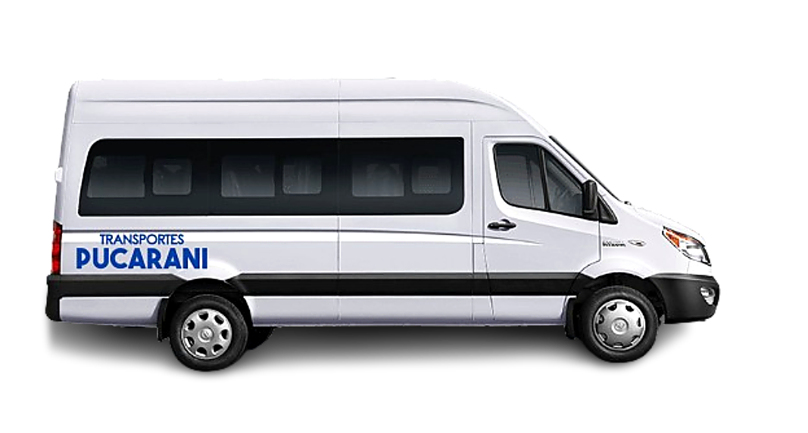
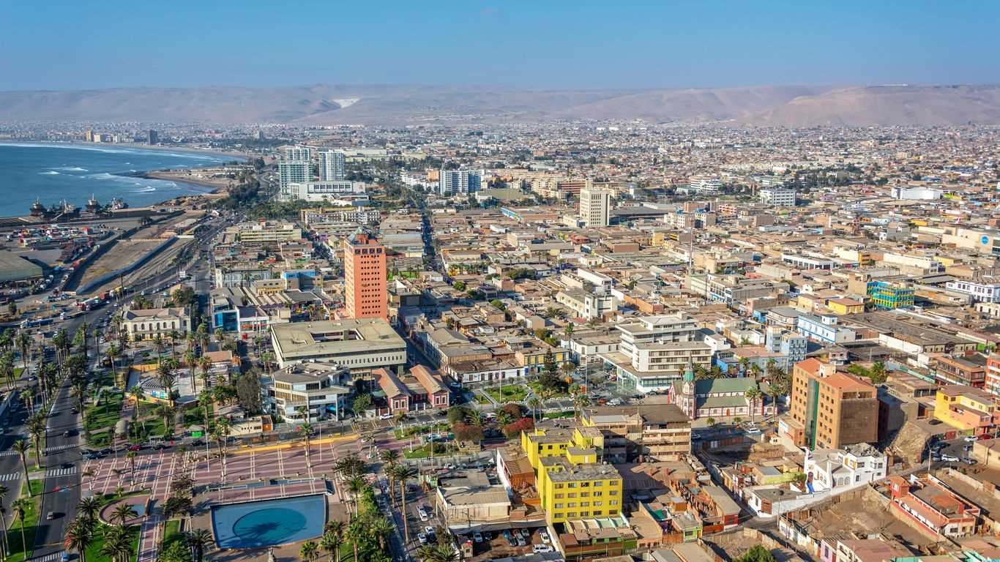

Transporte de pasajeros en Arica y Parinacota
Los que se comprometen con tu traslado
Traslados al aeropuerto Chacalluta, taxi ejecutivo, transfer al Puerto de Arica, viajes a Tacna y city tour por la ciudad. Transporte privado de pasajeros, puntual y confiable, disponible las 24 horas en toda la ciudad de Arica y cruzando la frontera.

Clientes
Viajes
Vehículos
Trabajadores
Quiénes Somos
Transportes Pucarani es una empresa de transporte de pasajeros con años de experiencia en la Región de Arica y Parinacota. Trasladamos ejecutivos, personal de empresas, turistas y familias desde cualquier sector de Arica hacia el aeropuerto Chacalluta, el puerto, los terminales de buses y Tacna.
Nuestro compromiso es un servicio seguro, puntual y de calidad que supere las expectativas de cada cliente, ya sea un traslado personal, un contrato corporativo o un recorrido por la ciudad.
Operamos las 24 horas, los 7 días de la semana, con vehículos revisados y conductores habilitados: desde un traslado al aeropuerto de madrugada hasta el movimiento de un equipo completo durante varios días.
Cada traslado es privado y con tarifa acordada antes de subir al vehículo: no compartes el auto con desconocidos ni esperas a que se completen los asientos. Si el viaje lo paga una empresa, emitimos factura y podemos dejar la cuenta abierta para todo el mes.
-
Puntualidad garantizada
Sabemos que tu tiempo es valioso. Nuestros conductores llegan a tiempo para que no pierdas ningún vuelo ni compromiso.
-
Seguridad en cada viaje
Todos nuestros vehículos cuentan con revisión técnica al día y nuestros conductores están debidamente certificados y capacitados.
-
Atención personalizada
Te atendemos por WhatsApp, teléfono o correo. Adaptamos nuestros servicios a tus necesidades y horarios sin complicaciones.
Nuestros Servicios
Soluciones de transporte para todas tus necesidades en Arica, Parinacota y Tacna.

Aeropuerto
Traslados al Aeropuerto Internacional Chacalluta (Arica) y al Aeropuerto Internacional Carlos Ciriani (Tacna). Monitoreamos tu vuelo para ajustar el horario de recogida.
Ver servicio
Taxi Ejecutivo
Servicio de taxi privado para ejecutivos y particulares. Vehículos cómodos, conductor profesional y puntualidad garantizada para tus reuniones y compromisos de negocios.
Ver servicio
City Tour Arica
Descubre Arica con nuestros recorridos guiados: el Morro de Arica, la Catedral de San Marcos, la ex Aduana, la costanera y los principales atractivos de la ciudad.
Ver servicio
City Tour Tacna
Cruzamos la frontera para conocer Tacna en el día: recorrido por el centro de la ciudad, tiempo libre para compras y regreso a Arica, con el trámite fronterizo coordinado.
Ver servicio
Puerto
Traslados al Puerto de Arica para trabajadores portuarios y tripulaciones. Servicio coordinado con los cambios de turno, incluidos los horarios de madrugada.
Ver servicio
Traslado de Artistas
Artistas, músicos y equipos de producción: aeropuerto, hotel, prueba de sonido y escenario. Espacio para instrumentos y horarios que se ajustan al montaje y al show.
Ver servicio¿Por qué elegirnos?
Confianza, seguridad y profesionalismo en cada kilómetro.
Conductores certificados y con experiencia
Tu seguridad y comodidad son nuestra prioridad número uno en cada trayecto.
- Licencias y habilitaciones al día en todo momento.
- Capacitación continua en atención al cliente y conducción segura.
- Conocimiento profundo de las rutas de Arica y toda la región.
Flota moderna y bien mantenida
Viaja con la tranquilidad de saber que el vehículo que te transporta está en óptimas condiciones.
Nuestros vehículos pasan revisiones técnicas periódicas y cuentan con aire acondicionado y cinturones de seguridad. Sedanes ejecutivos para parejas, vans para grupos y minibuses para eventos.
Disponibilidad las 24 horas, los 7 días
Vuelos de madrugada, reuniones urgentes o traslados en feriados: estamos disponibles cuando tú nos necesitas, sin excepciones.
- Servicio de traslados nocturnos sin recargo especial.
- Atención inmediata por WhatsApp y teléfono.
- Monitoreo de vuelos para ajustar la hora de recogida.

Toda Arica, y cruzamos hasta Tacna
Cubrimos cualquier sector de la ciudad de Arica y cruzamos la frontera hasta Tacna, Perú.
Desde el centro y la costanera hasta el puerto, el aeropuerto y los terminales de buses, llevamos a nuestros pasajeros con la misma calidad y compromiso de siempre. Consulta nuestro traslado de Arica a Tacna y el city tour en Tacna.

Dónde te llevamos
Cubrimos toda la ciudad de Arica y cruzamos la frontera hasta Tacna.
Arica ciudad
- Centro y calle 21 de Mayo
- Playa Chinchorro y costanera
- Playas El Laucho y La Lisera
- Morro de Arica
- Zona franca y sector industrial
- Hoteles y barrios residenciales
- Hospital y clínicas
Terminales y accesos
- Aeropuerto Chacalluta
- Puerto de Arica
- Terminal Rodoviario
- Terminal Internacional de buses
- Frontera Chacalluta - Santa Rosa
Tacna, Perú
- Centro de Tacna
- Aeropuerto Carlos Ciriani
- Terminal Manuel A. Odría
- Clínicas y centros médicos
- Zona comercial y mercados
Transporte y traslados en Arica a cualquier hora
Un vehículo privado para cada situación, sin recorridos compartidos ni esperas.
Casi todas las llamadas que recibimos son por lo mismo: alguien necesita moverse en Arica a una hora en la que no quiere depender de encontrar un taxi en la calle. Un vuelo que aterriza de madrugada, un turno que empieza a las seis, una reunión al otro lado de la ciudad o un viaje a Tacna con hora médica reservada. En todos esos casos el servicio funciona igual: lo coordinas por WhatsApp, sabes el valor antes de subir y el vehículo va solo con tu grupo.
- Traslados al aeropuerto: salidas y llegadas al Aeropuerto Chacalluta, con seguimiento del vuelo y espera en el hall de llegadas.
- Transfer dentro de la ciudad: hoteles, Terminal Rodoviario, Terminal Internacional de buses, zona franca, sector industrial, hospital y clínicas.
- Vehículo con conductor por horas o por el día: es nuestro taxi ejecutivo, pensado para agendas con varias paradas.
- Viajes a Tacna: traslado privado de Arica a Tacna puerta a puerta, con el cruce de frontera coordinado.
- Turismo y paseos: city tour por Arica y city tour en Tacna, los dos privados y con itinerario flexible.
- Grupos: vans y minibuses para turnos al Puerto de Arica, delegaciones y equipos de producción.
Cubrimos la ciudad de Arica completa y cruzamos hasta Tacna, en Perú. Si los traslados los paga una empresa, emitimos factura y trabajamos con cuenta mensual en lugar de cotizar viaje por viaje.
Preguntas Frecuentes
¿Tienes dudas? Aquí respondemos las consultas más comunes de nuestros clientes.
¿Emiten factura? ¿Puede contratarlos una empresa?
Sí. Todos nuestros servicios se pueden contratar a nombre de una empresa, con factura y, cuando los traslados son frecuentes, con cuenta mensual y respaldo de cada viaje. Es lo habitual con empresas portuarias, productoras y compañías que reciben ejecutivos en Arica.
¿Atienden los fines de semana y feriados?
Sí, operamos los 7 días de la semana, incluidos feriados y días festivos, las 24 horas. Los vuelos y compromisos no se detienen, por eso nosotros tampoco lo hacemos.
¿Qué tipo de vehículos tienen?
Contamos con sedanes ejecutivos para traslados individuales y de pareja, vans para grupos medianos, y minibuses para grupos grandes o eventos corporativos. Todos los vehículos son modernos, con aire acondicionado y mantenimiento periódico.
¿Cuánto cuesta un traslado en Arica y cómo se reserva?
El valor depende del sector, la cantidad de pasajeros, el equipaje y el horario. Escríbenos por WhatsApp con el origen, el destino y la hora, y te confirmamos una tarifa fija antes de reservar: lo que se acuerda es lo que se paga al llegar, sin taxímetro ni sorpresas.
¿Hacen traslados de madrugada?
Sí, y sin recargo por horario nocturno. Los vuelos de madrugada desde Chacalluta y los cambios de turno del puerto son parte de nuestro día a día; basta con dejar el traslado reservado con anticipación para que el conductor esté esperando a la hora exacta.
¿Hacen paseos o turismo por Arica?
Sí. Tenemos city tour privado por la ciudad de Arica —Morro, centro histórico, costanera y playas— y city tour en Tacna cruzando la frontera. Son recorridos dentro de la ciudad: no realizamos tours al interior de la región.
¿Llevan pasajeros de Arica a Tacna y de vuelta?
Sí, en vehículo privado y en los dos sentidos, puerta a puerta, con el paso por el complejo fronterizo Chacalluta - Santa Rosa coordinado. Es el viaje que más se nos pide para el aeropuerto Carlos Ciriani, para horas médicas y para ir de compras a Tacna.
¿Listo para reservar tu traslado?
Escríbenos ahora por WhatsApp y cotiza tu servicio en minutos.
Atención inmediata, sin esperas, los 7 días de la semana.
También puedes llamarnos: +56 9 9162 2929